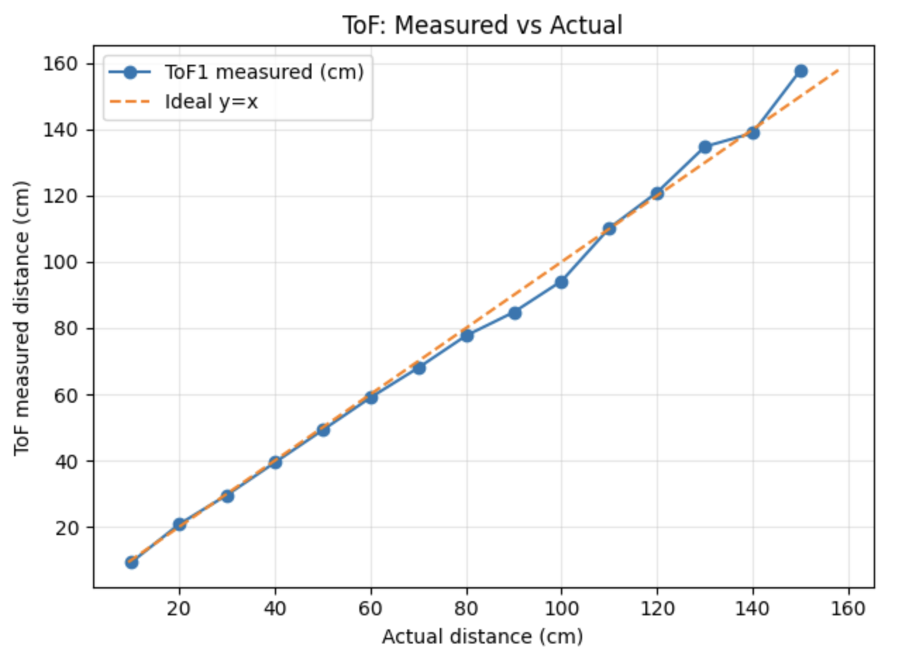
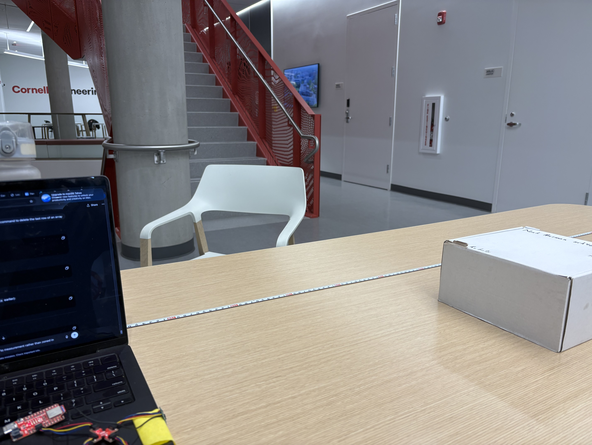
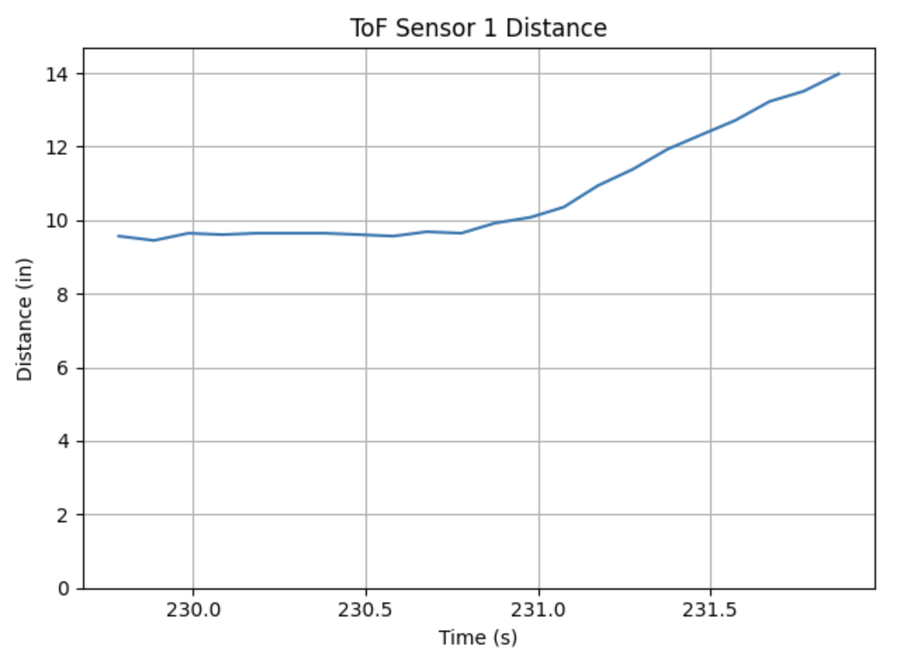
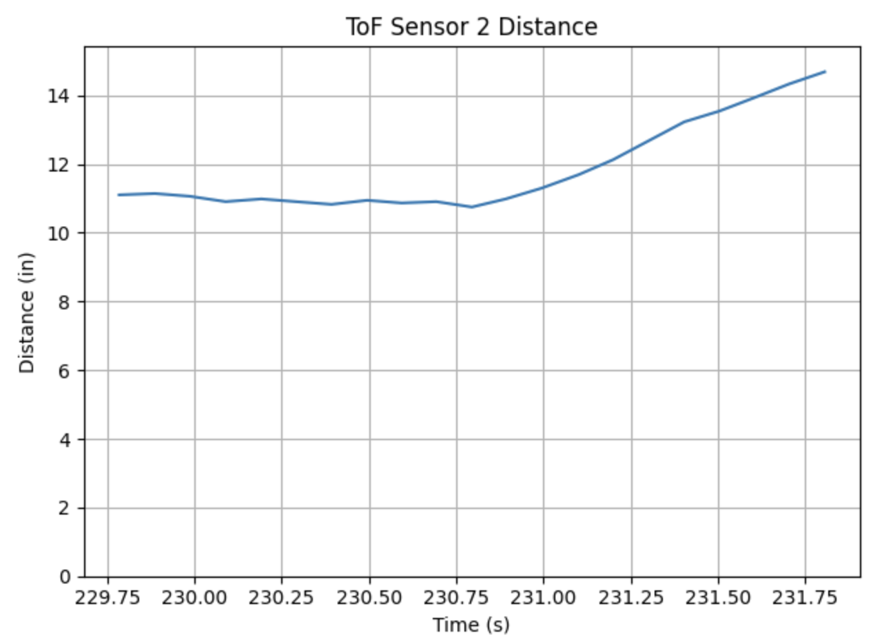
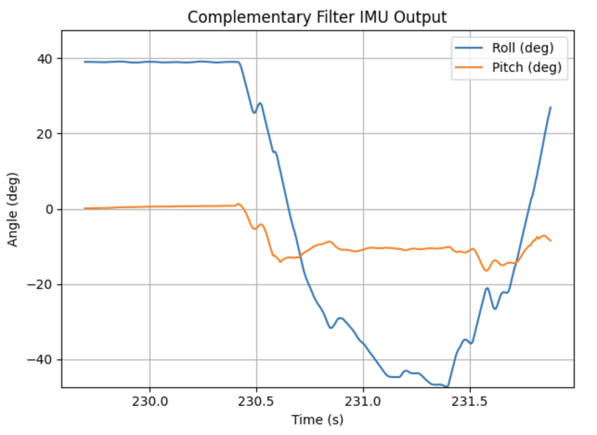
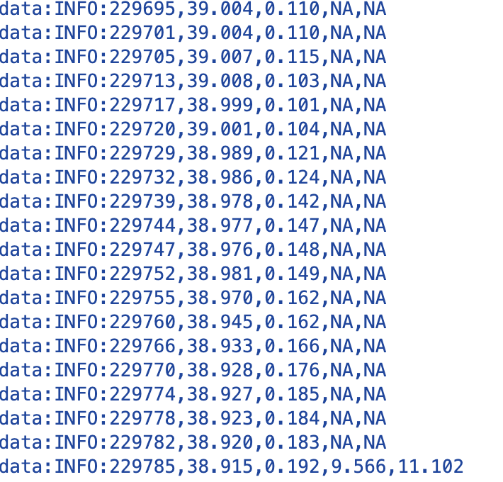

Prelab
I2C Address
The ToF sensors show an I2C address of 0x29. The spec sheet often lists 0x52, but that value includes the read/write bit. In practice, the useful 7-bit address is 0x29, and 0x52 is the 8-bit form that is effectively shifted due to the R/W bit.
Approach to Using 2 ToF Sensors
I will cycle the two sensors on and off, collecting measurements during the on periods in order to address the sensors separately. To do this, I will create a loop that toggles a shutdown pin so only one sensor is active at a time during address configuration, then I will assign a new I2C address and re-enable the second sensor so both can be read without conflicts.
Placement of Sensors and Missed Obstacles
I will use one sensor on the front and one sensor on the side of my robot. This allows forward distance measurement and lateral distance-to-wall measurement during turns. Obstacles can be missed if they are outside the ToF field of view, too low/high relative to the sensor mounting height, very thin, angled to reflect poorly, or temporarily blocked by the chassis during turns.
Wiring Diagram Sketch
Image placeholder: wiring diagram sketch for Artemis + QWIIC bus + two ToF sensors + shutdown/XSHUT pin
Lab Tasks
ToF Sensor Connected to QWIIC Breakout Board
Below is a picture of the ToF sensor connected to the QWIIC breakout board on my ARTEMIS.

Artemis Scanning for I2C Devices
Below is a screenshot of the Artemis scanning for I2C devices. The scan reports 0x29 for the ToF sensor(s), consistent with the 7-bit I2C address format used by the microcontroller.
Image placeholder: Arduino Serial Monitor showing I2C scan results with address 0x29
Sensor Data in Chosen Mode
I am going with long-range mode in order to be able to best map a room. I sampled up to about 1.5 meters to test accuracy using a tape measure.


2 ToF Sensors and the IMU
I wrote a command COLLECT_TOF to get distances for both ToF sensors using a shutdown pin so the sensors can be addressed separately. I also built a combined data capture command called GET_INFO that records IMU data as fast as possible, records ToF data when available, and outputs NA when ToF data is not ready.
Sensors Working in Parallel
Below is are screenshota showing the ToF sensors and IMU producing data. The last Image shows the raw data output, showing that they work in parralel. All of the data below was sent over bluetooth.




ToF Sensor Speed
In future labs, the code must execute quickly, so I cannot let the program hang while it waits for the sensor to finish a measurement. For fast recording, I used if statements to only read a ToF value when the sensor reports that the data is ready. The output includes a time value in milliseconds between recordings, and TOFNB stands for ToF non-blocked.
Non-Blocking ToF Logging Code
// Non-blocking ToF logging (prints time continuously, prints ToF only when ready)
tof1.startRanging();
tof2.startRanging();
for (int i = 0; i < 25; i++) {
int now_ms = millis();
Serial.print("Time(ms): ");
Serial.print(now_ms);
if (tof1.checkForDataReady()) {
int d1 = tof1.getDistance();
tof1.clearInterrupt();
Serial.print(" TOF1(mm): ");
Serial.print(d1);
}
if (tof2.checkForDataReady()) {
int d2 = tof2.getDistance();
tof2.clearInterrupt();
Serial.print(" TOF2(mm): ");
Serial.print(d2);
}
Serial.println();
delay(5);
}
tof1.stopRanging();
tof2.stopRanging();Speed and Limiting Factor
The loop runs quickly when it is not blocked by waiting for a measurement. The limiting factor is primarily the sensor update rate, and the intentional delays added to keep the data stream stable.
References
For this lab, I worked with Coby Lai when I ran into coding issues. I also used ChatGPT for help with syntax, coding, and page structure.